Nye navn og enklere start
Spillene heter nå Era Defenders, Mørkeskogen og Fossil Zoo. Alle har fått en startskjerm som viser målet og hvordan du styrer.

Laget av barn. For barn.Laget av barn. For barn. Gratis · Ingen innlogging
Fra spillstudioet
Spillene heter nå Era Defenders, Mørkeskogen og Fossil Zoo. Alle har fått en startskjerm som viser målet og hvordan du styrer.
Grav deg ned gjennom jordas oldtid, mellomalder og nytid. Hver fossilbit gir en ledetråd – klarer du å gjette dyret før det våkner?
Reis fra steinalderen helt til tidens ende. Nye steder er Robotfabrikken og Tidsvirvelen, med våpen som fryser fiendene.
Laget av barn. For barn.
EVN Studio er spillstudioet til Even, 9 år, og pappaen hans. Even finner på spillene, bestemmer hvordan de skal være og tester dem selv. Sammen bruker de KI til å gjøre ideene til ekte spill som andre barn kan spille.
Spillene er gratis, og alle kan prøve dem!
For voksne: Vi samler ikke inn navn eller e-post, og bruker ingen informasjonskapsler. Les mer om personvern og sikkerhet.
Era Defenders åpnes i fullskjerm som en egen app. De andre spillene åpnes i nettleseren.